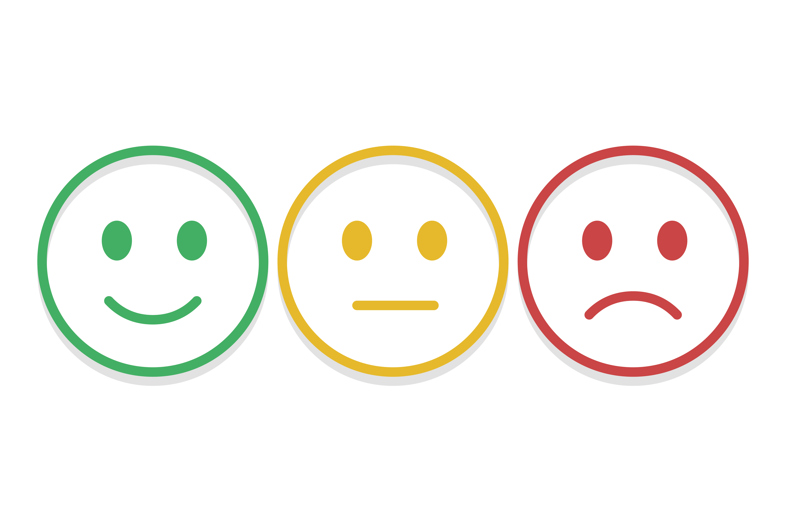

Ce sunt emoțiile?
Emoțiile sunt reacțiile noastre față de lumea din jur. Ele pot fi bucurie, frică, furie, tristețe sau entuziasm. Toate sunt naturale și importante.
De ce sunt utile emoțiile?
- Ne ajută să luăm decizii
- Ne spun ce este important pentru noi
- Ne ajută să ne conectăm cu alți oameni
Emoțiile nu sunt bune sau rele
Toate emoțiile au un rost. Chiar și emoțiile neplăcute (cum ar fi tristețea sau frustrarea) ne pot spune ce avem nevoie sau ce trebuie să schimbăm.
Important este să înțelegeri ce simțim și să vorbim despre emoțiile noastre.